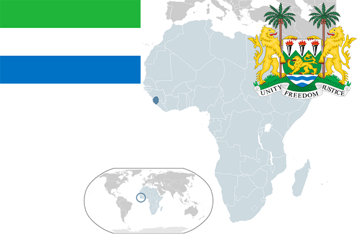

To`liq nomi: Syerra-Leone Respublikasi
Region: G’arbiy Afrika
Qonunchilik shakli: Respublika
Mustaqillik kuni: 27 aprel 1961-yil
Poytaxt: Fritaun
Maydoni: 71,740 km²
Chegaradosh davlatlari: Gvineya, Liberya
Aholisi: 7,075,641 (2015-yil)
Aholi zichligi: 79.4/km2
Aholining o`rtacha yoshi: 51,39 yil
Rasmiy tili: Ingliz tili
Dini: 60% islom, 10% xristian, mahalliy dinlar.
Pul birligi: Leone
Telefon prefiksi: +232
Internet domen: .sl
Xalqaro tashkilotlarga a`zoligi: BMT
Dengiz va okeanlarga chiqishi: Atlantika okeani
YIM: Butun: $4.7 mlrd.(2017-yil) Jon boshiga: $717
Yirik shaharlari: Fritaun